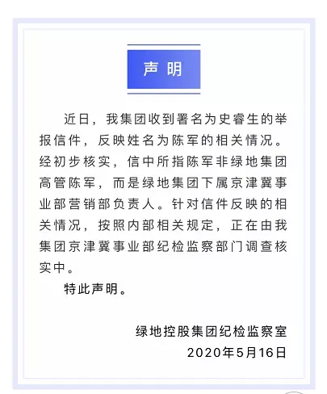

绿地绿帽事件全盘分析及潜在的处理结果
以前，天机的好友骂人的时候，总喜欢说：你头顶一片碧桂园。
四天前，天机扔了个瓜给他，这家伙前天才回信息，表示要把用了三年的话改成：你头顶一片绿地。并在当晚，把事件在他的公众号上发了，几百万粉的大V，瞬间引爆热度。
** 壹 **
这几天大家都吃这瓜，天机简单说： 史睿生实名举报绿地高管陈军，与史睿生合法妻子、现任绿地员工张雨婷发生不正当男女关系，及严重经纪违纪。
举报内容称，2018年10月25日，史睿生和张雨婷在澳洲领了结婚证，2019年12月23日张雨婷入职绿地实习，2020年1月2日两人又在中国领了结婚证，1月3日两人在日本度蜜月，1月22日张雨婷前往澳洲和丈夫一起过新年，2月1日返回中国。
2月3日绿地复工，绿地高管陈军将张雨婷安排担任自己的助理。2月底，在张雨婷未取得毕业证和学历认证的条件下，将其转正为正式员工。
3月初开始，陈军和张雨婷发生不正当男女关系，并每天居住在史睿生为妻子张雨婷租住的高级公寓内。
陈军告诉张雨婷，自己7年前在医院做过检查已完全丧失生育能力，因此未做任何保护，4月19日，每天与妻子视频通话的史睿生偶然间发现张怀孕，方被告知张雨婷去美中宜和妇儿医院做过检查，有身孕，目前张已怀陈军孩子2个月。
史睿生称，张雨婷爱慕虚荣、贪恋奢靡，经济开支远超父母的承担能力。在澳洲经济上的开支完全依赖史先生的工作收入，由史睿生每天去工作，供其上学（张多门考试挂科，难以毕业，由史先生支付重读及代写作业的费用）。
据史睿生与张雨婷的通话内容录音：
张雨婷称自己的合法丈夫史睿生是自己托底的安全牌（备胎的意思），而绿地的陈军每天和自己在一起，且利用职务之便，用公司每个月活动经费的一部分，帮张雨婷报销了2个1万元左右的奢侈品包；
张称陈军涉嫌营销条线贪腐行为，张配合陈挪用绿地国有公款，并通过洗钱收取巨额非法所得；
张称陈军呆过的每个城市都有四五套房子，与前妻离婚，分前期500万，2套豪宅（称自己亲眼见过）。张以女朋友的身份见过陈军父母，且陈军有9000万，要分三分之一给张，即3000万。
** 贰 **
随后，绿地集团发声明：

看到这，真是忍不住吐槽，严重怀疑绿地没有品牌部，声明的水平非常菜。
认真看完，给人的感觉似乎是专门为了给集团高管副总裁辟谣的，告诉大家，此陈军不是集团副总裁的那位陈军，而是集团下属京津冀事业部营销负责人的陈军。 听着有一种错觉，如果不是和集团副总裁同名，绿地都不想搭理，不知道诸位是不是同感？
相比之下，还是新城的品牌部水平高超，天机曾因写新城王振华事件，和新城控股的品牌部有过交流，有一说一， 打起交道来有一种让人如沐春风的感觉 ，让人觉得舒适，尊重天机的个人意愿，没有像恒大碧桂园那般强势用水军或投诉的方式，全程接触下来，只能称赞新城控股的品牌部，水平确实高。
当然了，夸归夸，往后还是会一如既往客观写实。 如果是新城控股的发声明，应该会是先提出会对信件反映的内容进行调查，并且将严查严办，随后再稍作解释，此陈军非彼陈军。
而绿地的声明，给人的感觉，本末倒置了。
叁
史先生是位人物，敢于自曝家事丑闻，并且没有慌乱、暴怒，而是冷静地麻痹对方，同时收集、获取录音等证据。
如果按十二星座性格来分析，大概只有摩羯座能做到如此坚韧隐忍，一击必杀。
可以预计，绿地一天没有公布处理结果，史先生将会逐步公布手上的录音等相关资料，携言论大势，索要一个结果。 张雨婷这类女子，在地产圈不在少数。
地产天机开号至今，听到当事人讲述类似事件，三四十件了。有时真心累，因为承受的负面信息太多了。每每此时，天机就会断休整一番，避免把个人负面的情绪传递给大家（所以往后周六周末不更新
 ）。
）。
比如前四房企，山东区域就有一位女职员，丈夫百般疼爱，所有的负债都在自己身上，将房屋不动产等登记在她名下。结果，该女子还是外出租住，公然和区域某已婚总经理出双入对，因为总经理能给的更多。丈夫几次表示原谅她，最终还是没能挽回。 有人会问，天机写的小说中，哪个公司的哪个区域最乱。答案是日迟的华北区域、蓝天的西南区域和东北区域、太穷的上海区域和闽南区域，一颗的北京区域和云南（昆明）区域、鸟厂的大部分区域。
陈军这类职业经理人，在美色方面不自制的，在地产行业的数量如过江之鲫。举个栗子，某龙头房企湖南区域常熟片区的执行总裁，就曾潜规则几位女下属，并致使部分女下属怀孕流产。
至于地产圈的职业经理人的贪腐行为，此前曾写过 房企内部贪腐方式及十大漂白手法大起底 ，有兴趣的可以点进去看一看。 在地产行业，一家中型房企的集团营销中心总经理，捞几千万非常简单。而地产圈贪腐上亿的也多，就连捞财十亿级别的，也有好几位。这种就看所在公司要不要查，怎么查，且敢不敢自曝了，一般都是内部处理。 有兴趣的，可以点开5月16日更新的那篇文章，开头有个《天机奇谈》的专辑，可以看小说，月底也会开放新平台，继续更新。
肆
最后，说一说绿地可能的处理情况。 因为这事闹得很大，对公司的品牌方面形成了负面影响，女主又是当事人，且违规通过不正当条件被转正，可以确定作开除处理。
男主，绿地京津冀事业部营销负责人，则有以下几类应对可能： 第一，因为一切都是张雨婷口述被录音，陈军可以否认洗钱、挪用公款贪腐等严重的违法违纪行为，只承认用活动经费报销2个奢侈品包（2万元）。
要不要认这个2万元报销行为，要看有没有在公司留下发票等什么不可抹除的证据，没证据的连这个都不会承认。 第二，可以否认自己有9000万身家和要分给张雨婷3000万，表示只是哄女孩子开心吹吹牛的，被对方当真了。这点可以通过哭穷表示，毕竟明面上的收入就那么多，哪来的9000万。 在此，做个延伸阅读。对于国企，大家可能有个普遍的印象，认为国企的管理层收入低？如果是，那就白看天机的文章了，实报实销四个字，抵你年薪数百万。且不知有没有其他的隐形收入（有违规收入这方面的话，工资收入只能算九牛一毛）。 第三，可以只承认违规转正张雨婷为正式员工，并且和她有不正当男女关系，致使其怀孕。 正常来说，如果第一点中，没有留下什么不可抹除的证据，陈军大概率只会承认第三点。 当然了，如果绿地真要查，也能查出结果的，毕竟这类事件平时如果做多了，总会留下些蛛丝马迹没收拾干净。 至于查，也要看是事业部查，还是集团查。从行业从业者的一些观点来看，有些人普遍认为，绿地的纪检监察水平......辣鸡。至于天机的观点，取决于要不要收律师函，如果是不收，会在这个评价上，加超级二字。
对于陈军来说，比较不幸的一点是，集团的副总裁因为同名，帮自己背了不少锅。
综合以上几点，正常情况下是开除处理，对公众有个交代。
至于移送司法，概率小。如果查出重大贪腐等违规违纪行为，一般情况下，大概率也不会对外公布，只会淡化。 毕竟，金主爸爸平安撤了，绿地的股票价格从最高点下跌了87%，“绿地”里长的不知道多少绿油油的股民韭菜，被股市收割了。经不起再折腾下跌了，需要维稳（看不到什么上涨的动力）。 极端情况下，是通报批评、罚款处罚，不开除。这么不符合众人期望的处理结果，绿地应该不会用。
关注公众号，准确输入关键词：“日迟”、“蓝天”、“太穷”、“一颗”、“鸟厂”等，有玄机。

按日期浏览全部来源（同日按条目标识排序）